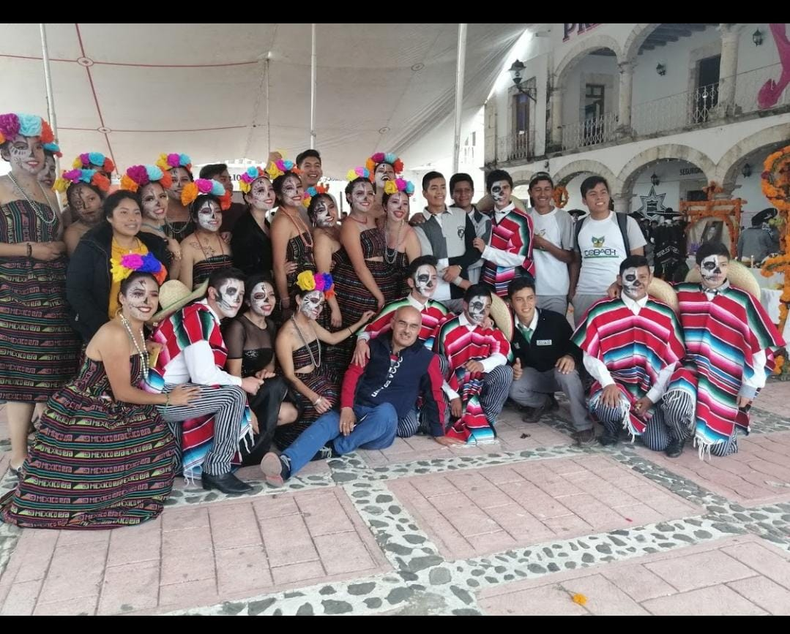

Lic. Cirenio Rivera Rojas
Hola profe creo que es momento de decir hasta pronto hoy quiero darle gracias por darnos conocimientos previos
de diferentes temas, gracias por aquellas llamadas de atencion, de verdad me fue muy grato conocerlo,apesar de que en nuestro grupo
muchos desiamos que era demasiado exhagerado y que nos dejaba demasiado trabajo pero se que lo hacia con el fin de que nos hagamos responsables, sabiamos que
aveces sus sarcasmos no era para molestarnos si no para que no nos rindieramos y le hecharamos ganas para salir adelante,
tuve el gusto que fuera mi acesor en dos ocaciones, muchos me decian uyyy te va a ir muy mal ese profe es muy estricto
pero creame que para mi ha sido y sera uno de los mejores profesores, gracias por que a pesar de que eramos un grupo relagiento
pues siempre nos dijo que habia muchos alumnos que tienen metas por delante y que sabia que podemos lograr lo que nos propongamos.
Profe sinceramente en un principio pues me daba miedo por los comentarios que me decian, pero con el paso de los dias sabia que
tenia que arriesgar y nos solo quedarme en mi zona de confort, se que algunos temas no fueron nada faciles de comprender pero a pesar de eso
trate de hecharle ganas y seguir, y no solo yo, si no mi grupo tambien habia momentos en los que ya todos estabamos estresados y ya con ganas de terminar
sus trabajos, muchos en algun momento dijimos imaginan cuando ya salgamos y ya no tengamos clases con el profe Cirenio, pues si pensabamos que ese momento
seria feliz, pero ahora le digo que no profe creo que extrañaremos cada clase de usted y los retos que no hacia para no realizar un examen, por ultimo me quedo con
su frase de que lo facil es para los flojos y lo dificil es para aquellos que quieren salir adelante
Gracias por su amistad
se queda de usted su Alumna

Lesly Abigail Torres Ramirez